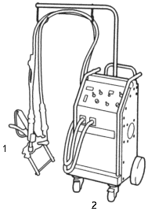
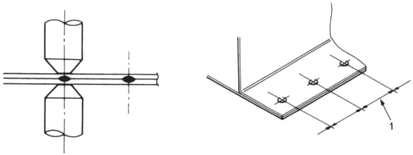
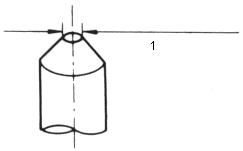

Welding Methods
|
2-17 |
Spot welding is also known as resistance spot welding, and it is the most suitable method of welding for vehicles. It has 3 main features: the welding can be performed instantaneously, it has minimal effect on the source material, and it has a minimum affect on distortion to the absolute minimum. However, please remember to remove all paint and other impurities from the surface of the material you intend to weld for reliable results.
Welders:
 |
|
Welding Conditions:
When performing spot welding, make sure that you conform to the following conditions: use the correct current, conductivity time, welding pressure, holding time, and shutdown time recommended for the spot welder.
Please bear in mind the following points when welding:
 |
|
NOTE: If the welding intervals are too short, branching may occur, making it impossible to maintain the desired soldering state.
Plate thickness and tip diameter.
 |
|
|||||
Unit: mm (in.)
| Plate thickness | 0.6 (0.02) | 0.9 (0.04) | 1.2 (0.05) | 1.6 (0.06) |
| Minimum intervals | 11 (0.43) | 16 (0.63) | 20 (0.79) | 24 (0.94) |
Unit: mm (in.)
| Plate thickness | 0.8 (0.03) | 0.9 (0.04) | 1.2 (0.05) | 1.6 (0.06) |
| Tip diameter | 45 (0.12) | 5.0 (0.2) | 5.5 (0.22) | 6.0 (0.24) |